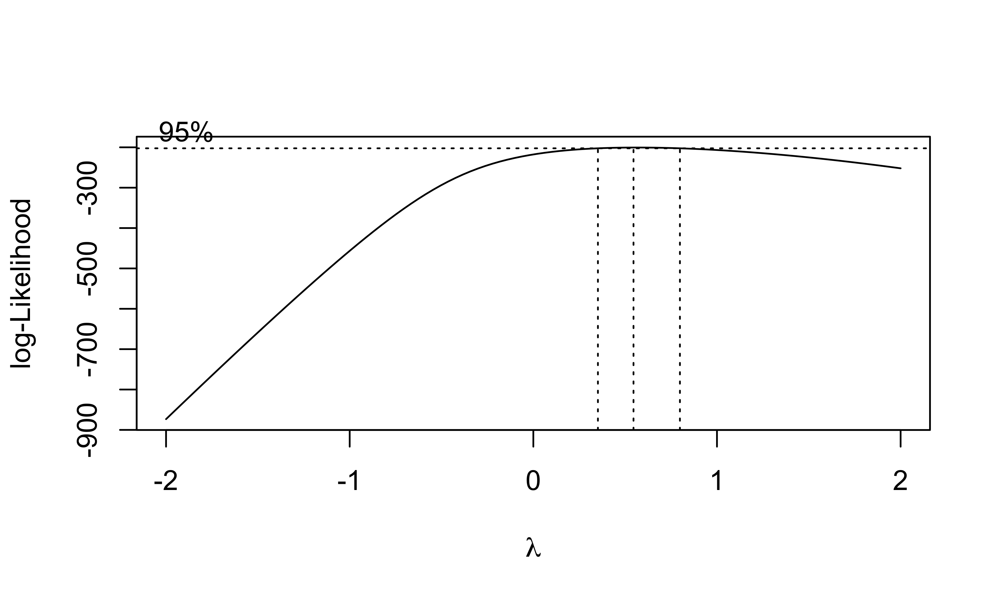
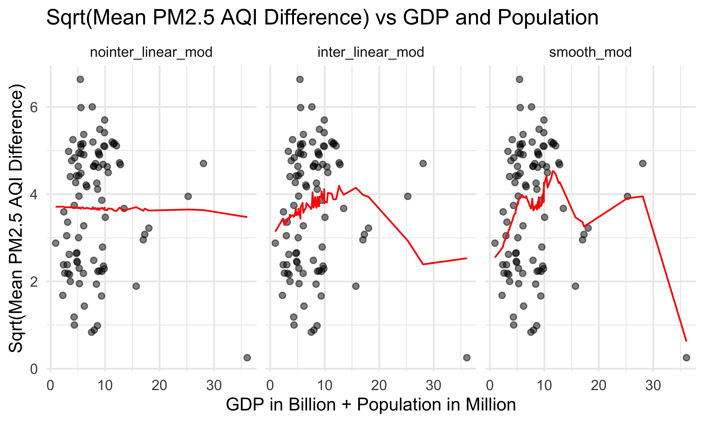

Recently, the COVID-19 pandemic has been a huge challenge for human beings. It was first identified in Wuhan, China in late December 2019, and then rapidly spread out worldwide. In order to contain the sudden COVID-19 outbreak, China implemented the lockdown policy in early February 2020, minimizing industrial, transportational, and commercial activities. Although the lockdown caused a tremendous economic loss, previous research had shown that the air condition in the top four megacities of China improved significantly during the lockdown period due to a dramatic decrease in automobile and industrial emissions (Wang et al., 2020). Bearing this in mind, we are motivated to find out whether “lockdown improves overall air quality” is a common phenomenon in Chinese cities including but not only limited to megacities. In addition, if there is indeed an association between lockdown and overall air quality, we are also interested in exploring the relationship between air quality improvement and other potentially correlated variables, for example, GDP, population, and temperature.
The lockdown period started from early February to late April 2020. To ensure complete data coverage, we applied air quality data from February 1st to April 30th , 2020. Out of over 600 Chinese cities, we selected 30 representative ones based on geographical locations. For convenience, they are either municipalities or provincial capitals.
It has been established that seasonal variation does have a significant impact on air quality. Therefore, to control for the effects that different seasons have on air quality, we compared 30 cities’ air quality data during the lockdown period with the data during the same time period in 2019.
The air condition in a given area is usually denoted by the Air Quality Index (AQI), which is a variable describing the daily level of air pollution for five major pollutants. Each pollutant has its own AQI and for the purpose of this project, we will limit intended study objects to PM2.5, PM10, and NO2.
Is there a positive relationship between lockdown and air quality in the 30 cities that we are interested in? In other words, does lockdown improve the overall air quality level in each city?
Since the 30 cities are characterized by distinct locations, we are further interested in exploring whether location affects air quality improvement as well. If this statement holds, then which geographical area had the most significant improvement? Which one had the least?
The AQI is divided into 6 categories according to its value. Arranged in an ascending order, they are Good, Moderate, Unhealthy for Sensitive Groups, Unhealthy, Very Unhealthy, and Hazardous. Considering that the 30 cities are of different conditions, we want to investigate whether each city shares the same distribution of AQI categories or not.
Besides lockdown, are there any other potential variables that might be correlated with air quality improvement? We have come up with possible variables like GDP, population, and temperature and will conduct multiple linear regression to see if they are related.
knitr::opts_chunk$set(echo = TRUE)
library(magrittr)
library(dplyr)
library(pivottabler)
library(tidyverse)
library(ggridges)
library(modelr)
library(mgcv)
knitr::opts_chunk$set(
fig.width = 6,
fig.asp = .6,
out.width = "90%"
)
theme_set(theme_minimal() + theme(legend.position = "bottom"))
options(
ggplot2.continuous.colour = "viridis",
ggplot2.continuous.fill = "viridis"
)
scale_colour_discrete = scale_colour_viridis_d
scale_fill_discrete = scale_fill_viridis_d
city_30_df_pm25 = tibble(
file = list.files("30_cities_data")) %>%
mutate(
city = str_remove(file, "-air-quality.csv"),
path = str_c("30_cities_data/", file),
data = map(path, read_csv)
) %>%
unnest(data) %>%
select(-file, -path) %>%
mutate(
city = str_to_title(city),
date = as.Date(date, format = "%Y/%m/%d")) %>%
select(city,date,pm25)
pm25_2020 =
city_30_df_pm25 %>%
filter(date > "2020-01-31" & date < "2020-05-01") %>%
mutate(date = format(date, format = "%y-%m-%d")) %>%
select(city, date, pm25)
pm25_2019 =
city_30_df_pm25 %>%
filter(date > "2019-01-31" & date < "2019-05-01") %>%
mutate(date = format(date, format = "%y-%m-%d")) %>%
select(city, date, pm25)
pm25_2018 =
city_30_df_pm25 %>%
filter(date > "2018-01-31" & date < "2018-05-01") %>%
mutate(date = format(date, format = "%y-%m-%d")) %>%
select(city, date, pm25)
pm25_2017 =
city_30_df_pm25 %>%
filter(date > "2017-01-31" & date < "2017-05-01") %>%
mutate(date = format(date, format = "%y-%m-%d")) %>%
select(city, date, pm25)
pm25_171819 = rbind(pm25_2017,pm25_2018,pm25_2019)
pm25_1920 = rbind(pm25_2020,pm25_2019)Are cities and air quality level dependent at 5% level of significance? In other words, given the data collected above, is there a relationship between the cities and the level of air quality that they have obtained?
Null hypothesis (H0): the air quality level and the different cities variables of the contingency table are independent in 2020 between February to April.
Alternative hypothesis (H1): the air quality level and the different cities variables of the contingency table are dependent in 2020 between February to April.
city_PM25 = pm25_2020 %>%
drop_na() %>%
select(city,pm25) %>%
mutate(level = as.character(pm25)) %>%
mutate(
level = case_when(
pm25 <= 50 ~ 'Good',
pm25 <= 100 ~ 'Moderate',
pm25 <= 150 ~ 'Unhealthy for Sensitive People',
pm25 <= 200 ~ ' Unhealthy',
pm25 <= 300 ~ 'Very Unhealthy',
pm25 <= 500 ~ 'Hazardous')) %>%
arrange(city,level,pm25)
city_level =
city_PM25 %>%
group_by(city,level) %>%
summarise(n = n()) %>%
pivot_wider(names_from = "level", values_from = "n")
city_level[is.na(city_level)] = 0 airquality_level = read.csv("test (Fei)/city_air_quality_level.csv", row.names = 1 )
knitr::kable(airquality_level)| Good | Moderate | Unhealthy.for.Sensitive.People | Unhealthy | Very.Unhealthy | Hazardous | Total | |
|---|---|---|---|---|---|---|---|
| Beijing | 19 | 31 | 23 | 14 | 3 | 0 | 90 |
| Changchun | 2 | 29 | 37 | 8 | 7 | 5 | 88 |
| Changsha | 2 | 17 | 54 | 15 | 0 | 0 | 88 |
| Chengdu | 1 | 22 | 47 | 18 | 0 | 0 | 88 |
| Chongqing | 0 | 20 | 53 | 15 | 0 | 0 | 88 |
| Fuzhou | 9 | 56 | 23 | 0 | 0 | 0 | 88 |
| Guangzhou | 17 | 52 | 16 | 3 | 0 | 0 | 88 |
| Guiyang | 0 | 42 | 43 | 3 | 0 | 0 | 88 |
| Harbin | 7 | 36 | 25 | 12 | 6 | 1 | 87 |
| Hefei | 3 | 45 | 36 | 4 | 0 | 0 | 88 |
| Jinan | 1 | 21 | 47 | 19 | 0 | 0 | 88 |
| Kunming | 1 | 50 | 36 | 1 | 0 | 0 | 88 |
| Lanzhou | 0 | 26 | 62 | 0 | 0 | 0 | 88 |
| Lhasa | 56 | 32 | 0 | 0 | 0 | 0 | 88 |
| Nanchang | 0 | 28 | 50 | 10 | 0 | 0 | 88 |
| Nanjing | 0 | 42 | 39 | 4 | 0 | 0 | 85 |
| Nanning | 10 | 52 | 22 | 4 | 0 | 0 | 88 |
| Shanghai | 5 | 49 | 29 | 3 | 1 | 1 | 88 |
| Shenyang | 1 | 28 | 33 | 24 | 2 | 0 | 88 |
| Shenzhen | 2 | 67 | 17 | 2 | 0 | 0 | 88 |
| Shijiazhuang | 0 | 21 | 37 | 24 | 6 | 0 | 88 |
| Suzhou | 0 | 33 | 43 | 12 | 0 | 0 | 88 |
| Taiyuan | 2 | 29 | 32 | 20 | 5 | 0 | 88 |
| Tianjin | 9 | 29 | 27 | 21 | 2 | 0 | 88 |
| Wuhan | 1 | 20 | 55 | 12 | 0 | 0 | 88 |
| Wulumuqi | 3 | 46 | 22 | 11 | 4 | 2 | 88 |
| Xian | 0 | 19 | 44 | 19 | 6 | 0 | 88 |
| Xining | 0 | 28 | 58 | 2 | 0 | 0 | 88 |
| Yinchuan | 0 | 57 | 24 | 7 | 0 | 0 | 88 |
| Zhengzhou | 2 | 18 | 47 | 19 | 2 | 0 | 88 |
| Total | 153 | 1045 | 1081 | 306 | 44 | 9 | 2638 |
chisq.test(airquality_level, simulate.p.value = TRUE)##
## Pearson's Chi-squared test with simulated p-value (based on 2000
## replicates)
##
## data: airquality_level
## X-squared = 1363.2, df = NA, p-value = 0.0004998qchisq(0.05, 174, lower.tail = TRUE) ## [1] 144.494For a Chi-square test, the p-value(0.0004998) that is less than 0.05 significance level. We can reject the null hypothesis (H0) and indicates there is no evidence to conclude that the air quality level and the different cities variables of the contingency table are independent and there is a relationship between them.
Null hypothesis (H0): The true mean difference between the average number of AQI (pm25) for each 30 cities from February to April 2020 and the average number between 2017-2019 is equal to zero.
Alternative hypothesis (H1): The true mean difference between the average number of AQI (pm25) for each 30 cities from February to April 2020 and the average number between 2017-2019 is not equal to zero.
mean_20 = pm25_2020 %>%
drop_na() %>%
select(-date) %>%
group_by(city) %>%
summarise(mean = mean(pm25)) %>%
select(mean) %>%
pull()
mean_171819 = pm25_171819 %>%
drop_na() %>%
select(-date) %>%
group_by(city) %>%
summarise(mean = mean(pm25)) %>%
select(mean) %>%
pull()
table1 = pm25_2020 %>%
drop_na() %>%
select(-date) %>%
group_by(city) %>%
summarise(mean_2020 = mean(pm25))
table2 = pm25_171819 %>%
drop_na() %>%
select(-date) %>%
group_by(city) %>%
summarise(mean_2017_2018_2019 = mean(pm25)) %>%
select(-city)
table3 = pm25_2020 %>%
drop_na() %>%
select(-date) %>%
group_by(city) %>%
summarise(standard_deviation_2020 = sd(pm25))
table4 = pm25_171819 %>%
drop_na() %>%
select(-date) %>%
group_by(city) %>%
summarise(standard_deviation_2017_2018_2019 = sd(pm25)) %>%
select(-city) knitr::kable(bind_cols(table1,table2))| city | mean_2020 | mean_2017_2018_2019 |
|---|---|---|
| Beijing | 101.08889 | 122.56180 |
| Changchun | 129.68182 | 130.83146 |
| Changsha | 119.76136 | 131.89139 |
| Chengdu | 120.07955 | 138.58052 |
| Chongqing | 118.37500 | 122.62547 |
| Fuzhou | 85.51136 | 101.99625 |
| Guangzhou | 79.71591 | 104.67416 |
| Guiyang | 104.68182 | 119.70037 |
| Harbin | 118.10227 | 128.25468 |
| Hefei | 99.15909 | 133.51311 |
| Jinan | 121.12500 | 153.87640 |
| Kunming | 93.87500 | 107.58801 |
| Lanzhou | 109.44318 | 127.83895 |
| Lhasa | 47.64773 | 70.38202 |
| Nanchang | 117.04545 | 122.91011 |
| Nanjing | 103.63529 | 131.98876 |
| Nanning | 89.17045 | 102.31461 |
| Shanghai | 96.43182 | 121.94382 |
| Shenyang | 124.36364 | 131.01124 |
| Shenzhen | 86.70455 | 108.02622 |
| Shijiazhuang | 132.56818 | 170.88015 |
| Suzhou | 112.28409 | 138.64419 |
| Taiyuan | 123.22727 | 141.02622 |
| Tianjin | 112.10227 | 131.56015 |
| Wuhan | 119.30682 | 148.14286 |
| Wulumuqi | 111.55682 | 153.50562 |
| Xian | 130.88636 | 156.21348 |
| Xining | 112.95455 | 125.71536 |
| Yinchuan | 95.00000 | 113.98876 |
| Zhengzhou | 125.65909 | 153.83895 |
knitr::kable(bind_cols(table3,table4))| city | standard_deviation_2020 | standard_deviation_2017_2018_2019 |
|---|---|---|
| Beijing | 53.622410 | 58.27449 |
| Changchun | 71.154930 | 41.89880 |
| Changsha | 31.946433 | 35.77939 |
| Chengdu | 31.925280 | 31.39782 |
| Chongqing | 27.455842 | 32.98602 |
| Fuzhou | 26.220547 | 31.28411 |
| Guangzhou | 30.560266 | 32.54474 |
| Guiyang | 25.447510 | 27.04869 |
| Harbin | 82.209578 | 51.92377 |
| Hefei | 26.941779 | 29.62705 |
| Jinan | 33.247872 | 35.76158 |
| Kunming | 25.200717 | 27.87814 |
| Lanzhou | 17.747823 | 25.46043 |
| Lhasa | 9.629982 | 20.77276 |
| Nanchang | 27.839404 | 33.82973 |
| Nanjing | 25.560780 | 29.50181 |
| Nanning | 33.432802 | 30.92044 |
| Shanghai | 43.508170 | 38.68478 |
| Shenyang | 43.895430 | 41.74101 |
| Shenzhen | 22.903676 | 26.22566 |
| Shijiazhuang | 45.105444 | 66.73903 |
| Suzhou | 29.967396 | 33.18705 |
| Taiyuan | 45.217159 | 45.75691 |
| Tianjin | 45.379888 | 55.96237 |
| Wuhan | 28.383806 | 30.04290 |
| Wulumuqi | 55.372689 | 76.66299 |
| Xian | 37.331516 | 49.79993 |
| Xining | 19.740215 | 29.23179 |
| Yinchuan | 30.217982 | 33.16596 |
| Zhengzhou | 34.516325 | 46.23868 |
t.test(mean_20, mean_171819, paired = T)##
## Paired t-test
##
## data: mean_20 and mean_171819
## t = -11.116, df = 29, p-value = 5.679e-12
## alternative hypothesis: true difference in means is not equal to 0
## 95 percent confidence interval:
## -23.87243 -16.45294
## sample estimates:
## mean of the differences
## -20.16268qt(0.05, 29)## [1] -1.699127For a Two-Sample Paired T-test, the p-value(5.679e-12) that is less than 0.05 significance level. We can reject the null hypothesis (H0) and indicates there is no evidence to conclude that the true mean difference between the average number of AQI (pm25) for each 30 cities from February to April 2020 and the average number between 2017-2019 is equal to zero and there are different mean for each 30 cities between 2020 and 2017-2019.
library(tidyverse)
library(ggridges)
library(modelr)
library(mgcv)
library(patchwork)
theme_set(theme_minimal() + theme(legend.position = "bottom"))
options(
ggplot2.continuous.colour = "viridis",
ggplot2.continuous.fill = "viridis"
)
scale_colour_discrete = scale_colour_viridis_d
scale_fill_discrete = scale_fill_viridis_d
city_100_df =
tibble(
file = list.files("100_cities_data")) %>%
mutate(
city = str_remove(file, "-air-quality.csv"),
path = str_c("100_cities_data/", file),
data = map(path, read_csv)
) %>%
unnest(data) %>%
select(-file, -path) %>%
mutate(
city = str_to_title(city),
date = as.Date(date, format = "%Y/%m/%d"))
pm25_2020 =
city_100_df %>%
filter(date > "2020-01-31" & date < "2020-05-01") %>%
group_by(city) %>%
summarize(mean_pm25_2020 = mean(pm25, na.rm = T))
pm25_2019 =
city_100_df %>%
filter(date > "2019-01-31" & date < "2019-05-01") %>%
group_by(city) %>%
summarize(mean_pm25_2019 = mean(pm25, na.rm = T))
pm25_diff =
left_join(pm25_2020, pm25_2019) %>%
mutate(pm25_diff = mean_pm25_2019 - mean_pm25_2020)
gdp_pop_df =
read_csv("data/gpd_and_popluation.csv") %>%
janitor::clean_names() %>%
mutate(
gdp_trillion = gdp_billion / 1000,
pop_million = population_thousand / 1000) %>%
select(city, gdp_trillion, pop_million)
diff_gdp_pop_df =
left_join(pm25_diff, gdp_pop_df) %>%
select(-mean_pm25_2020, -mean_pm25_2019)We learn that air quality improvement in a city may correlate to the city’s GDP and population, so we create a data frame containing mean pm2.5 AQI differences between 2019 and 2020, GDP and population in 2019 for 100 representative cities.
The resulting data frame of diff_gdp_pop_df contains 100 observations of 4 variables. Each row represents one unique city. Below are key variables:
city: city name
pm25_diff: difference of mean pm2.5 AQI during the lockdown period (Feb-Apr) between 2019 and 2020
gdp_trillion: 2019 GDP in trillion
pop_million: 2019 population in thousand
Since the boxcox function only works with positive values for the response variable y, we removed pm25_diff less than 0 to check if a transformation is appropriate here.
pos_diff_gdp_pop_df =
diff_gdp_pop_df %>%
filter(pm25_diff > 0)
fit = lm(pm25_diff ~gdp_trillion + pop_million, data = pos_diff_gdp_pop_df)
MASS::boxcox(fit)
The box-cox plot shows that log-likelihood has the maximum value around lambda = 0.5, so square root of pm25_diff is the recommended transformation.
trans_diff_gdp_pop_df =
pos_diff_gdp_pop_df %>%
mutate(sqrt_pm25_diff = sqrt(pm25_diff))
trans_fit = lm(sqrt_pm25_diff ~gdp_trillion + pop_million, data = trans_diff_gdp_pop_df)
trans_fit %>%
broom::tidy() %>%
knitr::kable(caption = "Linear Regression Results")| term | estimate | std.error | statistic | p.value |
|---|---|---|---|---|
| (Intercept) | 3.7187826 | 0.2799728 | 13.2826555 | 0.0000000 |
| gdp_trillion | 0.0436444 | 0.3796025 | 0.1149740 | 0.9087190 |
| pop_million | -0.0102924 | 0.0529619 | -0.1943355 | 0.8463464 |
After fitting a linear model for sqrt(mean pm2.5 AQI difference) dependent on gdp_trillion and pop_million, gdp_trillion variable has a slope of 0.0436 and pop_million variable has a slope of -0.0103 with p values of 0.909 and 0.846 which are extremely large. Therefore, GDP and population in a city don’t have significant effects on predictions of air quality improvement, in other words, we don’t have enough evidence to support that air quality improvement has a linear relationship with GDP and population.
par(mfrow = c(2,2))
plot(trans_fit)In residuals vs fitted plot, residuals appear to be evenly distributed around 0, indicating that residuals have constant variance. In normal QQ plot, a straight line is not seen, so our model violates the assumption that residuals are normally distributed. The scale-location plot shows that except for #11, residuals equally spread around a roughly horizontal line, confirming that residuals have constant variance. Finally, all the four plot show that there is an influential outlier labelled #11.
Fit three models for sqrt_pm25_diff vs. gdp_trillion and pop_million.
nointer_linear_mod = lm(sqrt_pm25_diff ~ gdp_trillion + pop_million, data = trans_diff_gdp_pop_df)
inter_linear_mod = lm(sqrt_pm25_diff ~ gdp_trillion * pop_million, data = trans_diff_gdp_pop_df)
smooth_mod = gam(sqrt_pm25_diff ~ s(gdp_trillion, pop_million), data = trans_diff_gdp_pop_df)
trans_diff_gdp_pop_df %>%
gather_predictions(nointer_linear_mod, inter_linear_mod, smooth_mod) %>%
mutate(model = fct_inorder(model)) %>%
ggplot(aes(x = gdp_trillion + pop_million, y = sqrt_pm25_diff)) +
geom_point(alpha = .5) +
geom_line(aes(y = pred), color = "red") +
facet_grid(~model) +
labs(
x = "GDP in Billion + Population in Million",
y = "Sqrt(Mean PM2.5 AQI Difference)",
title = "Sqrt(Mean PM2.5 AQI Difference) vs GDP and Population")
Cross validation for sqrt_pm25_diff vs. gdp_trillion and pop_million.
cv_df =
crossv_mc(trans_diff_gdp_pop_df, 100) %>%
mutate(
train = map(train, as_tibble),
test = map(test, as_tibble)) %>%
mutate(
nointer_linear_mod = map(train, ~lm(sqrt_pm25_diff ~ gdp_trillion + pop_million, data = .x)),
inter_linear_mod = map(train, ~lm(sqrt_pm25_diff ~ gdp_trillion * pop_million, data = .x)),
smooth_mod = map(train, ~gam(sqrt_pm25_diff ~ s(gdp_trillion, pop_million), data = .x))) %>%
mutate(
rmse_nointer_linear = map2_dbl(nointer_linear_mod, test, ~rmse(model = .x, data = .y)),
rmse_inter_linear = map2_dbl(inter_linear_mod, test, ~rmse(model = .x, data = .y)),
rmse_smooth = map2_dbl(smooth_mod, test, ~rmse(model = .x, data = .y)))
cv_df %>%
select(starts_with("rmse")) %>%
pivot_longer(
everything(),
names_to = "model",
values_to = "rmse",
names_prefix = "rmse_") %>%
mutate(model = fct_inorder(model)) %>%
ggplot(aes(x = model, y = rmse)) +
geom_boxplot() +
labs(
x = "Model",
y = "RMSE",
title = "Distribution of RMSE across Models (Log(Mean PM2.5 AQI Difference) vs GDP +Population)") +
theme(
title = element_text(size = 8, face = "bold"),
axis.title.x = element_text(size = 10),
axis.title.y = element_text(size = 10))We then did cross validation for three different models of mean PM2.5 AQI difference vs. gdp_trillion and pop_million. The distribution of RMSE values for each model suggests that the smooth model works slightly better than two linear models. There is some improvement in predictive accuracy gained by allowing non-linearity, but it is not sufficient to justify this model.
weather_df =
rnoaa::meteo_pull_monitors(
c("CHM00054511", "CHM00058362", "CHM00050953", "CHM00054342", "CHM00055591", "CHM00056294", "CHM00056778", "CHM00059287", "CHM00057036", "CHM00057494"),
var = c("PRCP", "TAVG"),
date_min = "2020-02-01",
date_max = "2020-04-30") %>%
mutate(
name = recode(
id,
CHM00054511 = "Beijing",
CHM00058362 = "Shanghai",
CHM00050953 = "Harbin",
CHM00054342 = "Shenyang",
CHM00055591 = "Lhasa",
CHM00056294 = "Chengdu",
CHM00056778 = "Kunming",
CHM00059287 = "Guangzhou",
CHM00057036 = "Xian",
CHM00057494 = "Wuhan"),
tavg = tavg / 10,
prcp = prcp / 10) %>%
select(-id) %>%
rename(city = name) %>%
relocate(city)
city_10_df =
city_100_df %>%
filter(date > "2020-01-31" & date < "2020-05-01") %>%
filter(city %in% c("Beijing", "Shanghai", "Harbin", "Shenyang", "Lhasa", "Chengdu", "Kunming", "Guangzhou", "Xian", "Wuhan"))
pm25_tavg_df =
left_join(city_10_df, weather_df, by = c("city", "date")) %>%
arrange(date) %>%
select(city, date, pm25, tavg) %>%
filter(pm25 != "NA")We also hypothesize that daily PM2.5 AQI may correlate to daily average temperature. We collect 02/2020 - 04/2020 temperature data for 10 representative cities in all the regions(East, South, West, North) to avoid bias caused by locations if possible. The resulting data frame has 882 observations of 4 variables. Below are the variables:
city: city name
date: the date on which PM2.5 AQI and average temperature were collected
pm25: PM2.5 AQI on that day
tavg: average temperature on that day
fit_tavg = lm(pm25 ~tavg, data = pm25_tavg_df)
MASS::boxcox(fit_tavg)The box-cox plot shows that log-likelihood has the maximum value around lambda = 0, so natural logarithm of pm25_diff is the recommended transformation.
log_pm25_tavg_df =
pm25_tavg_df %>%
mutate(lnpm25 = log(pm25))
log_fit = lm(lnpm25 ~tavg, data = log_pm25_tavg_df)
log_fit %>%
broom::tidy() %>%
knitr::kable(caption = "Linear Regression Results")| term | estimate | std.error | statistic | p.value |
|---|---|---|---|---|
| (Intercept) | 4.5007147 | 0.0250049 | 179.993116 | 0.0000000 |
| tavg | 0.0028357 | 0.0019151 | 1.480744 | 0.1390328 |
Based on this table, tavg variable has a slope of 0.0028 with p value of 0.139 which is larger than 0.05. Therefore, daily average temperature in a city may not have significant effects on predictions of air quality improvement. However, the p value of this model is much less than that of the model mean PM2.5 AQI difference vs GDP and population, meaning the linear model daily PM2.5 AQI vs daily average temperature is more significant.
par(mfrow = c(2,2))
plot(log_fit)Residuals seem to be evenly distributed around 0, which is an indication of constant variance. There are some potential outliers, such as #766 and 163. The normal QQ plot shows a roughly straight line, meaning residuals are normally distributed. Therefore, our model fitting for daily pm2.5 AQI difference dependent on daily average temperature doesn’t violate assumptions on residuals.
Fit three models for lnpm25 vs. tavg.
linear_mod_tavg = lm(lnpm25 ~ tavg, data = log_pm25_tavg_df)
smooth_mod_tavg = gam(lnpm25 ~ s(tavg), data = log_pm25_tavg_df)
wiggly_mod_tavg = gam(lnpm25 ~ s(tavg, k = 30), sp = 10e-6, data = log_pm25_tavg_df)
log_pm25_tavg_df %>%
gather_predictions(linear_mod_tavg, smooth_mod_tavg, wiggly_mod_tavg) %>%
mutate(model = fct_inorder(model)) %>%
ggplot(aes(x = tavg, y = lnpm25)) +
geom_point(alpha = .5) +
geom_line(aes(y = pred), color = "red") +
facet_grid(~model) +
labs(
x = "Daily Average Temperature",
y = "Log(Daily PM2.5 AQI)",
title = "Models of Log(Daily PM2.5 AQI) vs Daily Average Temperature"
)Cross validation for lnpm25 vs. tavg.
cv_tavg_df =
crossv_mc(log_pm25_tavg_df, 100) %>%
mutate(
train = map(train, as_tibble),
test = map(test, as_tibble)) %>%
mutate(
linear_mod = map(train, ~lm(lnpm25 ~ tavg, data = .x)),
smooth_mod = map(train, ~mgcv::gam(lnpm25 ~ s(tavg), data = .x)),
wiggly_mod = map(train, ~gam(lnpm25 ~ s(tavg, k = 30), sp = 10e-6, data = .x))) %>%
mutate(
rmse_linear = map2_dbl(linear_mod, test, ~rmse(model = .x, data = .y)),
rmse_smooth = map2_dbl(smooth_mod, test, ~rmse(model = .x, data = .y)),
rmse_wiggly = map2_dbl(wiggly_mod, test, ~rmse(model = .x, data = .y)))
cv_tavg_df %>%
select(starts_with("rmse")) %>%
pivot_longer(
everything(),
names_to = "model",
values_to = "rmse",
names_prefix = "rmse_") %>%
mutate(model = fct_inorder(model)) %>%
ggplot(aes(x = model, y = rmse)) +
geom_boxplot() +
labs(
x = "Model",
y = "RMSE",
title = "Distribution of RMSE across Models (Log(pm2.5 AQI) vs Tavg)")The distribution of RMSE values for each model fitting daily PM2.5 AQI vs daily average temperature suggests that the smooth model works better than linear and wiggly models.
We don’t have enough evidence to support that during the lockdown period, air quality improvement in a city has a significant linear relationship with GDP and population. The daily PM2.5 AQI isn’t significantly correlated to daily average temperature either. The two non-significant linear models may be due to small sample size, so a larger sample size may be helpful for getting significant models.
Overall, we found that there was a significant relationship between the lockdown and air quality level for 30 cities combined, which was consistent with our initial hypothesis. The air quality for the 30 cities was generally better during the lockdown compared to the same period in the past year. However, contrary to what we expected before, none of GDP, population, and temperature served as predictors for air quality improvement after we conducted the regression analysis.
The map of China included in our analysis exhibits the distribution of magnitude of air quality improvement during the lockdown period across 100 cities. Each dot represents a city we selected, and the color indicates its degree of air quality improvement. The bluer the dot is, the more improvement it had made.
We can see that most cities with significant air quality improvement tend to cluster in the North China and Yangtze River Delta region. This might be partially explained by the economic structure. Industrial output value accounts for a relatively large proportion of GDP in these two areas. Normally, there are a lot of industrial activities going on there. However, during the lockdown period, nearly all of them were partially or completely suspended. As industry does have an unignorable negative impact on air quality, it’s not difficult to see why notable air quality improvement could be observed in these two regions.
There are a few notable limitations in our project. Firstly, besides GDP, population, and temperature, there might be variables that are more closely related to air quality improvements, for example, industrial output value. However, due to limited access to expected datasets, we failed to include it in our regression model. In addition, the 30 cities we selected are not representative since they are all relatively large in terms of scale. There are many more small cities that we hadn’t investigated. Therefore, the results we obtained in this project were not generalizable to all Chinese cities. Finally, the datasets we found contained a lot of missing values, which might undermine the reliability and validity of our study in some degree.
This project also further implicates that current economic and social development is nearly always at the expense of environmental degradation. However, there are promising ways that could tackle this problem effectively. For example, choosing means of transportation that are more environmental-friendly, using cleaner and renewable energies for production, and reducing hazardous substance emission could all ameliorate the situation to some extent.